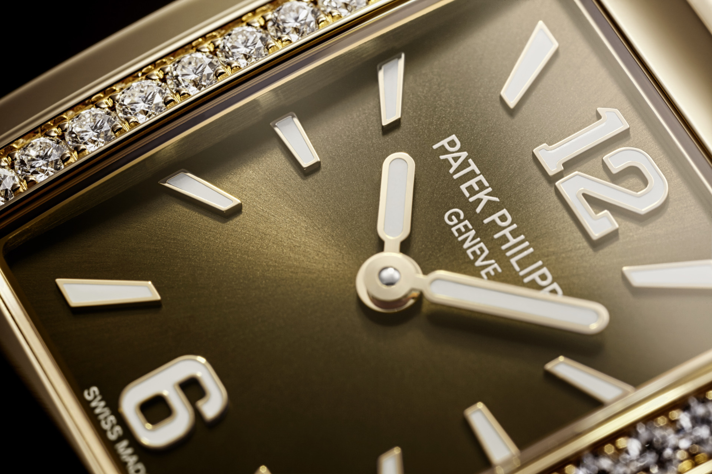

首度加入日出日落 Grand Complications 6105G-001
當時間不再只是指針的流動，而化為一場關於宇宙運行的精密演繹，PATEK PHILIPPE Ref. 6105G-001 以嶄新高度重新定義天文複雜功能腕錶。此款 2026 年話題之作首度將日出與日落時間顯示納入，結合星空圖、月相與日期等多重天文資訊，並透過六項專利加持的機械結構，實現夏令與冬令時間的同步校正，作為百達翡麗天文顯示時計悠久傳統的延續之作。


百達翡麗 5396R 年曆腕錶三十週年致敬之作
回顧現代高級製錶發展，一項真正具有影響力的複雜功能，往往不只是增加腕錶的技術含量，也可能重新改變市場對實用性的理解。1996 年，Patek Philippe 百達翡麗推出 Ref. 5035，首度將獲得專利的年曆複雜功能帶到世人面前。它既不是萬年曆的簡化版本，也不只是全日曆的小幅改良，而是一套能夠自動辨識 30 天與 31 天月份的機制。換句話說，佩戴者一年只需要在二月底手動調校一次。這項設計正好填補全日曆與萬年曆之間的空白，也憑藉更貼近日常使用的特性，逐漸成為百達翡麗最具代表性的複雜功能之一。
百達翡麗Twenty~4
Twenty~4時計於一九九九年面世，是百達翡麗首枚女士專屬的腕錶款式。腕錶設計時尚，誠為相伴現代女性多采多姿的生活而設。顧名思義，腕錶日夜佩戴皆可，莊閒場合皆宜，堪稱永恆優雅與卓越不凡的典範。編號4910／1201R-001新款腕錶搭配石英機芯，是第三枚展現Twenty~4時計全新面貌的法式袖口腕錶款是。集18K金錶殼和朱古力啡色放射狀錶面於一身，盡顯女性的溫婉、精緻與魅力。


聯絡我們
永新鐘錶歡迎愛錶人士，不論是鐘錶維修問題、如何保養、或是其他專業諮詢，我們都將誠摯為您服務。